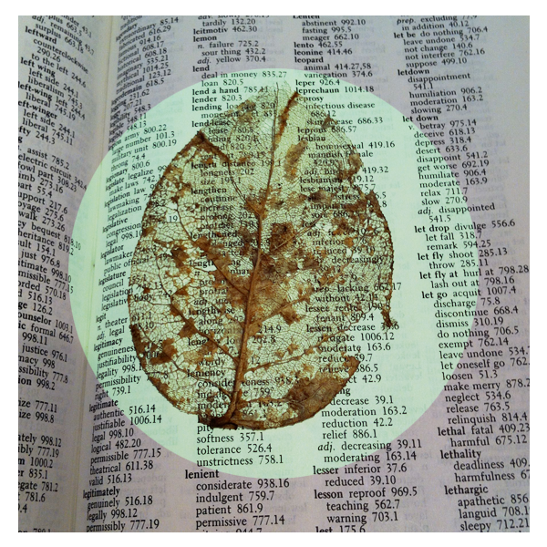
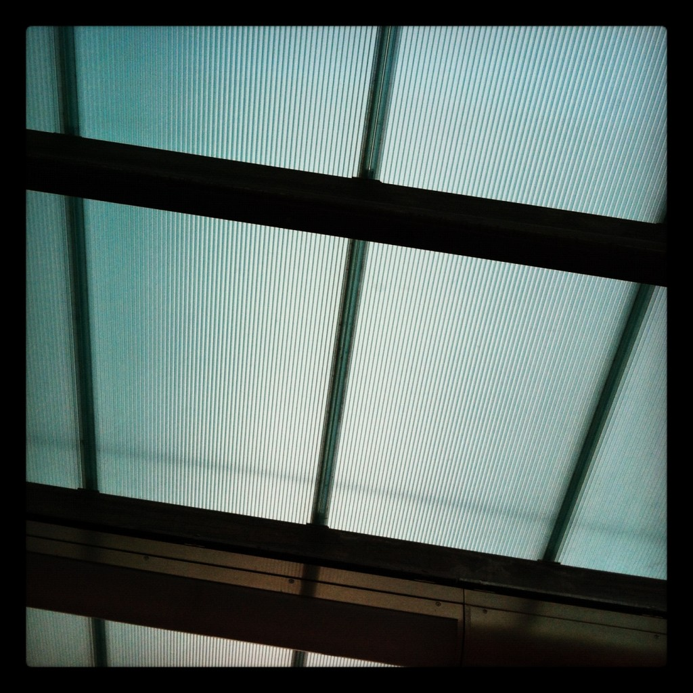
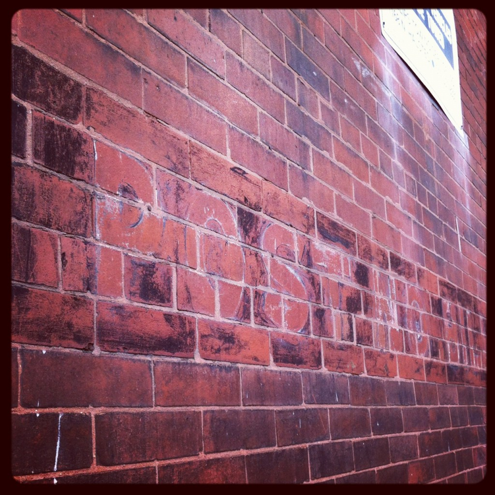

I purchased a copy of Red Pine’s translation of Lao Tzu’s Tao Te Ching at Wessel and Leiberman a few months back when I was in need of a quiet meditative project to do during lunch/coffee breaks at the office. I read one poem each day and drew a picture. I plan to post one or two a week here.
I had the good fortune to visit a paper mill recently as part of my job, and hot damn was that fun and awesomely cool. I have made paper by hand before but seeing a huge industrial paper factory in action was nothing sort of amazing. I was much better able to understand the process (which is essentially the same, just on a MUCH larger scale) having had that prior experience.
Our tour guide was excellent and incredibly knowledgeable about every aspect of the factory. They did not allow any photo taking (which was devastating to me, because there were so many amazing little details and textures i wanted to capture), but I surreptitiously snuck a couple!
Oh, and I also went to my first NFL game. Go Packers!
Drop Spine Integrated Cradle Box with Jeff Peachey
Jeff makes pretty tools and he is a book conservator in NYC. Over the course of 3 days Jeff showed us how to make a drop spine box with an integrated cradle. The integrated cradle is his design, and requires much concentration to master. It is a puzzle wrapped in a riddle of layers of book cloth covered in PVA. I unfortunately chose a rather large book to use as the form to learn this box structure, which made my 3 days a wee bit stressful, but I made it out the other side with something that reasonably resembles what it should. I have spent much of the following month perfecting my process with more mistakes than I care to count. I am going to get it perfect… I am getting so CLOSE!
Shifu Paper with Kate Boyes
We started with full sheets of mulberry paper, and we cut and we squished and we rolled and we soaked and we tore and then we SPUN! This was super fun and was quite the contrast to my three stressful PVA filled days with Mr. Peachey. Kate was ridiculously prepared for us and made it seem like a cooking show with all of her staged preparations so that we could move as fast or as slow as needed. It was super addicting and I wanted to make as much as I possibly could since I wasn’t sure when or if I would ever have the opportunity again.
Mischievo press and ephemera made its debut at FOBA. It was a short little window, but I got my feet wet and I made a few bucks!
I also met Jim Croft which was a treat. I purchased an awl and a super sweet elk bone folder from him that I fondle more than I actually use. I am sure that it will come in handy when those tight corners need a light touch. I hope to make the pilgrimage to Idaho one of these days for one of his traditional bookbinding workshops.
Overall the FOBA conference was just what I needed when I needed it. The weather was hot and sunny. The grass was GREEN and cool on bare feet. I met some great people and learned some cool stuff and came home super inspired to get some local classes up and running here in the PNW for the purely selfish reason that some of my happiest moments are spent with bone folder in hand, so stay tuned!
I like making books. I LOVE making books. The physical object itself has always been compelling and magical to me. I do however struggle with the content creation part of the making of books. I have no trouble whatsoever with filling up sketchbooks with words, illustrations, ideas, lists and scribbles, and I have no problem cranking out blank books all the live-long day. But connecting these two things has always been a challenge for me. In an effort to forge that connection I have been looking back at some of my initial inspiration to see what resonates.
THE BEGINNING
Back when I was a whippersnapper, back in the days before I even knew what book arts was, I was a fan of the book in all its many forms. From children’s books (someofmyabsolutefavorites) to the musty books stores I was always attracted to (whereIdiscoveredandconsumedthese) to libraries (I thought I wanted to be a librarian for a while, maybe I should have been!) I have always been a book lover.
If I had to guess the year I would say that it was 1988 (which would have made me a teenager) when a seed was planted. Somewhere in my travels I came across these 2 books that have been sitting on my bookshelf ever since:
I loved this book from the first moment I laid eyes on it. Firstly the size, a cozy 5.25″ square, that fits perfectly in your hand, and is just about the perfect size for a mud pie. Then of course, it is a book by John Cage. Don’t ask me how I knew who he was at the tender age of 16, but I did and I was a fan. I loved the playfulness and the message of this little book which I took to be: don’t take anything (especially art) too seriously.
This is another sweet little pocket sized book that I loved on first sight. I had very little interest in reading any of the text that accompanies the 165 woodcuts. Instead, I simply loved the images, dark blocky simplified illustrations that depicted a man having what I presumed was a passionate journey, and that was all I really needed to know. Having this book in my life made me feel good.
THE MIDDLE
A few years later, (1993?) my brother gave me a copy of Diane Noomin’s Twisted Sister an edited collection of “bad girl art”. Part comic book and part graphic novel, this was the beginning of my love affair with graphic novels.
Several years after that I moved from Austin, Texas to Savannah, Georgia to go to art school. At my going away party, my boss (a super creative amazing woman who was an ex-lawyer who studied poetry in school and who was and is a boutique hotelier, among other things) gave me a gift of two books
Dan Eldon’s The Journey is the Destination &
I Give You This Cadmium Red by John Berger and John Christie. These books opened another world to me in a similar way that The Mud Book and The Passionate Journey had. They instantly felt very familiar to me, as if I was being given permission to do something, but I wasn’t quite sure what yet.
THE LIGHT
Last but not least in 2002 I moved to Philadelphia and discovered book arts. Through a series of random circumstances and almost on a whim and mainly because I wanted to get my hands on the letterpress, I decided to tack on a minor in Book Arts to my BFA in Graphic Design. It was a good whim, and I have never regretted it. All of my most favorite times at school involved a folding paper with a bone folder and measuring things and learning how to do something that felt as though my hands always known how to do and had just been waiting for me to get my act together.
THE NOW
These books are not the only important books that I have collected over the years, but they feel like ingredients that I am cooking up in the book stew in my brain. The stew that I am going to keep reducing down until hopefully what comes out will be toothsome and tender and something that will make the cozy feeling my favorite books give me.
My whirlwind trip to NYC several weeks ago was more of a buying trip than anything else. Yes, I went to the stationery show, and that was cool and stuff, but I couldn’t BUY anything there. So that wasn’t really as much fun as it could have been.
I made the rounds as best I could given my available time, location and stamina. There were several trips to MUJI! My hotel was conveniently located near the garment district so I checked out M&J and tinsel trading, but my favorite places were the funky ones filled with every crazy kind of elastic and cotton twill in SO many color and sizes and all kinds of awesome things that I wish were more conveniently at my disposal! Also, mokuba ribbon ooo la la! And I stumbled upon the Kinokuniya one day on my way back the the hotel and found MANY treats there.
K made a pilgrimage to phil’s stationery, which I was hoping would be a dusty treasure trove of delights. It was and it wasn’t. They were kind of cranky and rather proud of their dusty crap. I did score a stash of onion skin while I was there though.

On my last day I walked The Highline, which was the highlight of my trip. It was sunny and the birds were chirping and the flowers were blooming and I fell in LOVE
After that I made an obligatory trip to Kate’s Paperie and the MOMA store, and just enjoyed walking through the city. I ended my day before zooming back up to Times Square on the subway to grab a car to the airport with soup dumplings in chinatown! ZOMG! Best thing EVER. I need to eat more more MORE of those.
A few months ago I attended the Hatch workshop class with Jim Sheridan, hosted at SVC. It was my first time (other than pulling a quick print at the wayzgoose every summer) in the print shop and it was a BLAST!
Jim was charming and made everyone feel welcome.
I got the time wrong and showed up at 9 (the class started at 10) so jim put carl and I to work gluing up some wood cuts that had been damaged in transport.
Jenny and Juliet were standing by to clean up for all the printers as we all got ink up to our elbows!
I can’t talk about pop ups without praising my teacher Carol Barton! While I was at UArts I was fortunate enough to take several classes and workshops with her and I learned SO much. She is awesome and if you are interested in learning to create pop ups I highly recommend ANY and ALL of her books.
In preparing to teach my first pop up class last fall I wanted to explore what it is about pop ups that I love. I like pop ups of all kinds, but the ones I really love to MAKE are more architectural in nature. I like the shapes and the shadows and my aesthetic naturally leans toward the graphic.
I have had a blast making cards for my friends and I was recently thrilled to received a commission for a set of twelve cards. Time to get busy!

i can’t go for that / the bird and the bee
bellwether / joe henry
spotlight / anders osborne
rich girl / the bird and the bee
the man i keep hid / joe henry
right down the line / bonnie raitt
the chauffeur / duran duran
she’s gone / the bird and the bee
death to the storm / joe henry
private eyes / the bird and the bee
suit on a frame / joe henry
heard it on the radio / the bird and the bee
stars / joe henry
sara smile / the bird and the bee
coda: light no lamp when the sun comes down / joe henry
maneater / the bird and the bee
prelude: light no lamp when the sun comes down / joe henry
one on one / the bird and the bee
The
2012 American Printing History Association Conference was held at Columbia College, near Chicago’s original Printer’s Row, and was host to 175 attendees this year. Considering the city’s rich history in the printing and design field dating back to the 1880s, Chicago was an excellent location for this event. Attendees had the opportunity to learn about local legends such as the historic
Inland Printer Magazine and the Union Type Foundry, as well as the pioneering binderies and engravers, and the huge printing plants built by R.R. Donnelly and Rand McNally. The Chicago region was also home to the Ludlow and Vandercook Companies and famous type designers such as
Oswald Cooper,
Frederic W. Goudy, and
Robert Hunter Middleton.
The first night of the conference kicked-off with a screening of
”Making Faces,” a film about the late James Rimmer, who was the proprietor of a print studio and foundry in Canada where he designed and produced his own typefaces. The painstakingly detailed process of creating letterforms and typefaces is an astounding craft to witness. The film screening was hosted by
The Newberry Library and coincided with the launch of their new exhibition,
”The Newberry 125”. The exhibition features stunning artifacts such as a copy of the
Book of Hours, circa 1450, and original Rand McNally maps from 1919.
While it was alternately sunny and windy, with a delightful absence of rain, a handful of my fellow conference goers and I gathered in the morning for a walking tour of Printer’s Row with type designer Jackson Cavanaugh, of the design studio
Okay Type. We followed Jackson along a fact-filled few blocks where we learned much about the history of this Midwest printing hub.
One of the interesting facts learned on the tour is that the big printing houses were set-up in 6 or 7 story buildings and practiced a top-down production process, literally. Counter intuitively, the heavy presses were located on the very top floor where typesetters had access to the best light for composing page after page of type for jobs like the Sears catalog. It’s awe inspiring just to imagine setting an entire catalog like that by hand! From the beginning of a print project on the top floor, the work moved down floor by floor, to the bindery and on to finishing before being loaded out the back door and onto the train, to be shipped to destinations nationwide. Today the buildings are home to condo-dwellers, but still stand as a great reminder of the historic past.

The conference also hosted a book fair, workshops and demos and library visits before the banquet and address from the keynote speaker,
Rick Valicenti. Valicenti is noted for winning the 2011 National Design Award in Communication Design from the Smithsonian’s
Cooper Hewitt, National Design Museum. His talk explored the question: What does type mean to us? Valicenti proclaimed that design encapsulates the moment of its creation and offered insightful examples. The first example of art encapsulating the moment was a
Superfly poster from the 1970s. Much about the period of time that it was created in is communicated in the typography, graphic style and printing technology used to produce it. It certainly is a kind of time capsule that offers a glimpse into the past.
Another of Valicenti’s examples was a photo of a picket sign from the teachers’ strike in Chicago that took place the previous week. Valicenti pondered whether or not the person who made the sign knew that the
Cooper Black typeface they chose was designed in Chicago in 1922 by Oswald Cooper? Or, he pondered, was it simply the fattest font they could find to get their point across? There are so many layers of meaning to discover imbedded into the myriad design decisions we make, some of which we are conscious of, and others that we are not. It is interesting to think about what the designs and the technology we are using today will say about this period of time
50 years from now.
The last day of the conference boasted an impressive lineup of 14 amazing speakers, ranging from historians to designers. The highlights were
Paul Shaw, editor of Codex Magazine,
Frank Romano, prolific author, and
Stan Knight, internationally known calligrapher and author.
Paul Shaw, who is also a letter artist, author, Design Historian and Professor at both
Parsons School of Design and
School of Visual Arts shared the history of Fred Goudy & Oswald Cooper in his presentation. He related how they got their start at the Holme School of Illustration in Chicago, and their subsequent careers in type design and illustration. Paul posits that the beginning of graphic design was born from the advertising industry in the 1890’s. His presentation would be enjoyed by any student of graphic design, and I was left wishing that he had been my teacher back in college!
Frank J. Romano, author of IP’s
Pocket Pal as well as many other books, is President of
The Museum of Printing in North Andover, Massachusetts. Mr. Romano is amazing! My only regret at his presentation is that I didn’t have my Pocket Pal handy for an autograph. Romano is a walking encyclopedia of everything that has anything to do with printing. He showed us almost every crazy machine that was ever used to set type post-linotype and pre-current digital age.
Stan Knight undertook the monumental effort of getting high quality images taken from libraries across the world so that anyone can actually see the examples of early letterform design. The book was recently published and I, for one, can’t wait to get my hands on a copy:
Historical Types from Gutenberg to Ashendene.
The attendees of APHA comprised a wide cross-section of people with varied yet similar interests. At dinner I chatted with book artists, librarians, library science and graphic design grad students, museum directors, teachers and type designers both young and old. The common thread that connects us all is books and the ingredients necessary to create them.

The consistent theme over the course of the weekend was looking forward into the past. Printing has a rich history, and while we are all trying to keep pace with the ever changing technology for the last 100 years, it is important to keep looking back at what came before. In looking back we see that there is much that we do, and how and why we do it, that remains the same.
Librarians and museums are archiving the historical artifacts of printing technology so that educators and researchers and students will continue to have access to the accumulated knowledge. Book artists and type designers are looking to the past for inspiration and using a hybrid of new and old technologies to tell their stories. As a graphic designer, book artist and a printer, the history of my profession is the history of printing and I was humbled and inspired to be a surrounded by so many people that care about preserving and protecting that history for the future.
low rising / the swell season
heaven’s escape / joe henry
odetta / joe henry
november was white, december was grey / say hi
eyes out for you / joe henry
dark tear / joe henry
in these arms / the swell season
sticks & stones / joe henry
sweetest kill / broken social scene
deathbed versions / joe henry
strung / joe henry
high horses / the swell season


{kind=link}
{kind=link}
{kind=link}
{kind=link}
{kind=link}
{kind=link}
{kind=link}
{kind=link}
{kind=link}
Recent Comments